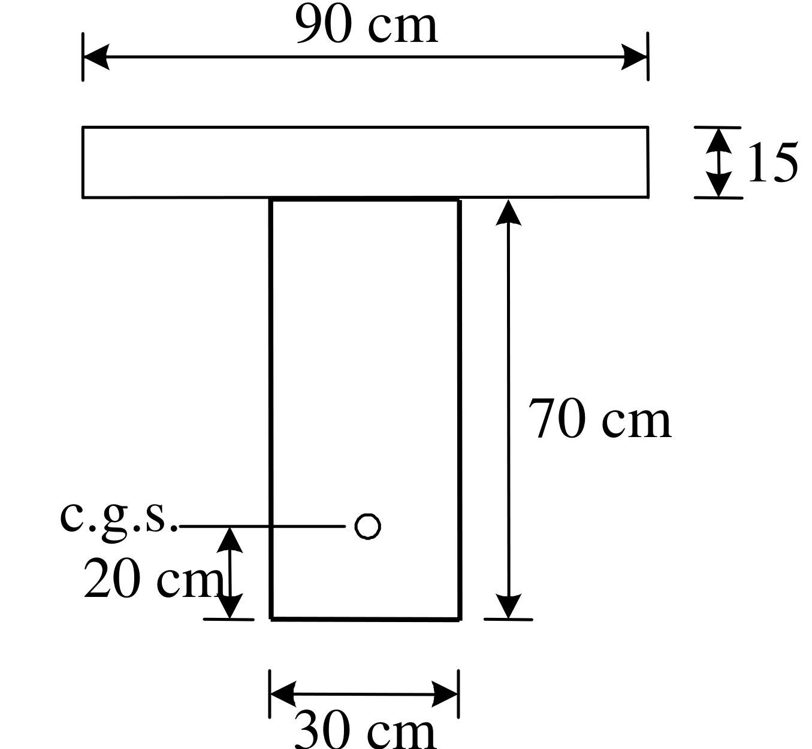
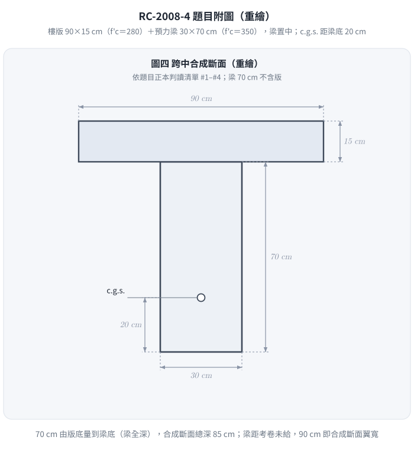
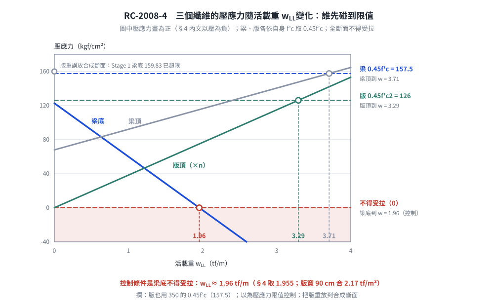

📄 題目正本：考卷原文・附圖・判讀清單（已確認）
RC-2008-4 題目正本
本檔只記錄考卷上寫了什麼、圖上畫了什麼，不含任何解法。解析見同資料夾
RC-2008-4.md。
判讀清單已經使用者確認（凍結）；本檔原則上不再修改（改動須回考卷原圖並記 log）。
| 項目 | 內容 |
|---|---|
| 考卷 | raw/exams/RC-2008_鋼筋混凝土設計與預力.pdf 第 2 頁（背面），第四題 |
| 考年 | 民國 97 年（2008） |
| 配分 | 30 分 |
| 附圖 | RC-2008-4-fig-2.png（圖四；2026-11-14 由考卷向量圖 500 dpi 重新擷取，無游標）；既有 RC-2008-4-fig-1.png 為同一圖、左上角有滑鼠游標（未壓到圖），保留不刪 |
| 判讀狀態 | 已確認（2026-11-14 使用者確認；轉錄 2026-11-14；PyMuPDF 110 dpi 全頁目視＋抽出文字核對，附圖 500 dpi 並讀 PDF 繪圖座標；盲讀後才比對既有解析） |
1. 考卷原文（逐字）
四、有一簡支預力梁，其跨度為 15 m，梁寬為 30 cm，梁全深為 70 cm，梁之 $f'_c$ =350 kgf/cm²。在此梁中，預力損失後預力鋼鍵之有效預力為 200 tf。此梁在預力損失後開始吊裝，並在其上澆置 15 cm 厚樓版，澆置後跨度中央梁與樓版之斷面如圖四所示，樓版之 $f'_c$ = 280 kgf/cm²。當樓版硬化並與梁結合為一體後，再於樓版上施加均佈活載重。若梁及樓版之混凝土壓應力均不得超過 0.45 $f'_c$，亦不容許混凝土承受張應力，則樓版上所能施加之最大均佈活載重為何？（30 分）
（「鋼鍵」照考卷原文。）
2. 考卷給的公式、附表與參數
- 題文數值：跨度 15 m；梁 $30 \times 70$ cm（全深）、$f'_c=350$；有效預力 200 tf（損失後）；樓版厚 15 cm、$f'_c=280$；容許壓應力 $0.45f'_c$（梁、版各依自身 $f'_c$）；不容許拉應力。
- 考卷未印任何公式。
- 沒有給：混凝土單位重、$E_c$／模數比、梁距（圖只畫 90 cm 版寬）、澆版時是否有支撐、活載重單位（tf/m² 或 tf/m）。
- 卷首注意事項：不必抄題，作答時請將試題題號及答案依照順序寫在試卷上，於本試題上作答者，不予計分。可以使用電子計算器，但需詳列解答過程。各題計算所用之規定及常數，如有條件不足時，請自行合理假設。
3. 附圖

圖面文字照錄：90 cm、15 cm、70 cm、c.g.s.、20 cm、30 cm、圖四。
4. 判讀清單
「把握」標不確定者請優先確認；解讀類項目（題目用字的意思）另標「解讀」。
| # | 項目 | 判讀 | 圖上／題文依據 | 把握 |
|---|---|---|---|---|
| 1 | 梁深 70 cm 的量測基準 | 梁本身 70 cm（樓版底面到梁底），不含版；合成斷面總深 85 cm | 70cm 尺寸線 y＝757.8（版底，版為 740.5–757.5）至 858.8（梁底），PDF 座標；題文「梁全深為 70 cm」 | 確定 |
| 2 | 版寬 | 樓版寬 90 cm（圖上即為合成斷面的翼寬） | 90cm 尺寸線兩端對齊版左右緣（x＝274.8、410.5） | 確定 |
| 3 | 梁位置 | 梁置中於版下 | 版中心 x＝342.65、梁中心 x＝342.6 | 確定 |
| 4 | 鋼腱位置（跨中） | c.g.s. 距梁底 20 cm → 距梁頂 50 cm | 20cm 尺寸線由 c.g.s. 水平線（y＝836.5）至梁底（858.8） | 確定 |
| 5 | 施工順序 | 梁先受預力（損失後）＋自重 → 澆版 → 版硬化後合成斷面承受活載重；考卷沒有明寫澆版時梁是否單獨承受版重（不像 2006 年同型題寫「利用梁作為支撐」） | 題文「此梁在預力損失後開始吊裝，並在其上澆置」 | 確定（解讀）（「在其上澆置」視為無支撐，版重由梁單獨承受） |
| 6 | 活載重單位 | 題目要「樓版上所能施加之最大均佈活載重」，未給單位；以版寬 90 cm 為分擔寬度，可答 tf/m²，也可同時列每公尺梁長 tf/m | 題文「於樓版上施加均佈活載重」 | 確定（解讀） |
| 7 | 應力限制 | 梁、版壓應力各 ≤ $0.45f'_c$（梁 157.5、版 126 kgf/cm²）；全斷面不得受拉 | 題文「梁及樓版之混凝土壓應力均不得超過 0.45 $f'_c$，亦不容許混凝土承受張應力」 | 確定 |
| 8 | 考卷沒有給 | 單位重、模數比、梁距、支撐、活載重單位 | 全題 | 確定（作答須自行假設） |
轉錄：2026-11-14（RC-U4-1 題目正本推廣・批 1）
確認：2026-11-14 使用者確認（RC-U4-1 題目正本推廣・批 1，關卡一）
考題編號：RC-2008-4
主分類： RC-U4-1 預力梁斷面應力分析
副分類： 無
設計法： WSD工作應力法
標籤： 後拉法 組合T型斷面 兩階段應力疊加 非組合梁承受DL 組合梁承受LL 底纖維拉力控制 容許應力設計 不同f'c轉換
1. 題目（考卷原文見題目正本）
考卷原文、公式／附表、附圖與判讀清單（已確認）見
RC-2008-4-problem.md。本節只列解題時最容易讀錯的地方與本解使用的記號；題意以題目正本為準。

重繪自考卷圖四，依題目正本判讀清單 #1–#4。70 cm 由版底量到梁底（梁全深，不含版），合成斷面總深 85 cm；本圖攔下把 70 當成含版總深。
常見誤讀
| 項目 | 正確判讀 | 常見誤讀 |
|---|---|---|
| 梁深 70 cm（#1） | 梁本身全深，量自版底；合成總深 85 cm | 70 含版 |
| 施工順序（#5） | 「在其上澆置」視為無支撐，版重由梁單獨承受 | 版重放到合成斷面 |
| 活載重單位（#6） | 以版寬 90 cm 為分擔寬度，答每公尺梁長 tf/m（可同列 tf/m²） | 單位不寫 |
| 應力限制（#7） | 梁、版各依自身 $f'_c$：$0.45f'_c$；全斷面不得受拉 | 版也用 350 的 $0.45f'_c$ |
本解記號： 壓為正、拉為負；$P_e=200$ tf；$e=35-20=15$ cm（梁斷面）；$n=\sqrt{280/350}$。
自行假設（考卷未給）： $\gamma_c=2400$ kgf/m³；$E_c\propto\sqrt{f'_c}$。
2. 考題核心精神與出題者意圖 (Core Concepts & Examiner's Intent)
核心觀念： 施工順序決定各載重的作用斷面：
- 非組合階段（Stage 1）：預力 + 梁自重 + 版DL（版尚未硬化，梁單獨承擔）→ 以梁斷面計算應力
- 組合階段（Stage 2）：版硬化後，活載重 → 以組合轉換斷面計算增量應力
最大 $w_{LL}$ 由底纖維不可受拉控制（Stage 1 底部壓力被 Stage 2 LL 拉力抵消）
出題者測驗能力：
- 正確判斷施工順序：版DL 在非組合階段承受（最常見陷阱）
- 計算不同 $f'_c$ 的組合轉換斷面（$n = \sqrt{f'_{c2}/f'_{c1}}$）
- 疊加兩階段應力並找出控制條件
3. 解題戰略地圖與陷阱分析 (Strategic Roadmap & Trap Analysis)
作戰順序：
| 階段 | 載重 | 作用斷面 | 目的 |
|---|---|---|---|
| Stage 1 | $P_e$ + 梁 SW + 版 DL | 非組合梁斷面 | 求 $f_{1,bot}$, $f_{1,top}$ |
| Stage 2 | $w_{LL}$ | 組合轉換斷面 | 求增量 $\Delta f_{2,bot}$ |
| 控制條件 | $f_{1,bot} + \Delta f_{2,bot} \geq 0$（不拉） | — | 反推 $w_{LL,max}$ |
四大陷阱：
| 陷阱 | 說明 |
|---|---|
| ⚠ 版DL 作用在非組合梁 | 澆置版時版尚未硬化，版自重由梁單獨承受（不是組合斷面） |
| ⚠ 偏心距定義 | $e = $ 非組合梁形心 $-$ c.g.s. $= 35-20=15$ cm（c.g.s.在形心下方） |
| ⚠ 不同 $f'_c$ 的轉換 | 組合斷面需用 $n=\sqrt{280/350}=0.894$，將版寬折減為轉換版寬 |
| ⚠ 版在組合前應力為零 | 版的初始應力為 0；只有 Stage 2 的 $w_{LL}$ 使版受壓 |
3.5 變數層次分析 (Variable Hierarchy Analysis)
複習提示：第一次解題後，在每個卡住的知識點旁標記
⚠；第二次複習時只看有⚠的項目。
最終目標
以兩階段應力疊加，找底纖維不受拉條件，反推最大均布活載重 w_LL
本題關鍵公式（依計算順序）
$$\text{Step 1: } e = \frac{h_1}{2} - 20 \text{ cm}, \quad S_{b1} = S_{t1} = \frac{I_1}{h_1/2}$$
$$\text{Step 2 (Stage 1): } f_{1,bot} = -\frac{P_e}{A_1} - \frac{P_e \cdot e}{S_{b1}} + \frac{M_{DL}}{S_{b1}}$$
$$\text{Step 3: } n = \sqrt{\frac{f'_{c2}}{f'_{c1}}}, \quad b'_{slab} = 90 \times n, \quad \bar{y} = \frac{\sum A_i y_i}{\sum A_i}$$
$$\text{Step 4: } I_c = I_1 + A_1(\bar{y}-y_1)^2 + I_{slab}' + A_{slab}'(\bar{y}-y_2)^2$$
$$\text{Step 5 (控制條件): } f_{1,bot} + \frac{M_{LL} \cdot \bar{y}}{I_c} \leq 0 \Rightarrow M_{LL,max} = |f_{1,bot}| \cdot \frac{I_c}{\bar{y}}$$
$$\text{Step 6: } w_{LL,max} = \frac{8 M_{LL,max}}{L^2}$$
L1：題目直接給定
| 符號 | 數值 | 說明 |
|---|---|---|
| $L$ | 1500 cm | 跨度 |
| $b_1, h_1$ | 30, 70 cm | 梁斷面 |
| $b_{slab}, t_{slab}$ | 90, 15 cm | 版外輪廓 |
| $f'_{c1}$ | 350 kgf/cm² | 梁混凝土 |
| $f'_{c2}$ | 280 kgf/cm² | 版混凝土 |
| $P_e$ | 200,000 kgf | 有效預力 |
| c.g.s. | 距梁底 20 cm | 預力鋼腱中心 |
L2：需知識點推導
Step 1：非組合梁斷面
| 符號 | 公式/來源 | 卡關? |
|---|---|---|
| $e$ | $35-20=15$ cm | |
| $A_1$ | $30\times70=2100$ cm² | |
| $I_1$ | $30\times70^3/12=857{,}500$ cm⁴ | |
| $S_{b1}=S_{t1}$ | $857{,}500/35=24{,}500$ cm³ |
Step 2：Stage 1 各載重
| 符號 | 公式/來源 | 卡關? |
|---|---|---|
| $w_{SW}$ | $2400\times0.30\times0.70=504$ kgf/m = 5.04 kgf/cm | |
| $w_{slab}$ | $2400\times0.90\times0.15=324$ kgf/m = 3.24 kgf/cm | |
| $w_{DL}$ | $5.04+3.24=8.28$ kgf/cm（全作用於非組合梁） | |
| $M_{DL}$ | $8.28\times1500^2/8=2{,}328{,}750$ kgf·cm |
Step 3：Stage 1 底/頂纖維應力
| 符號 | 公式/來源 | 卡關? |
|---|---|---|
| $f_{1,bot}$ | $-95.24-122.45+95.05=-122.6$ kgf/cm²（壓） | |
| $f_{1,top}$ | $-95.24+122.45-95.05=-67.8$ kgf/cm²（壓） |
Step 4：組合轉換斷面
| 符號 | 公式/來源 | 卡關? |
|---|---|---|
| $n$ | $\sqrt{280/350}=0.8944$ | |
| $b'_{slab}$ | $90\times0.8944=80.50$ cm | |
| $A_{slab}'$ | $80.50\times15=1207.5$ cm² | |
| $\bar{y}$ | $(2100\times35+1207.5\times77.5)/(2100+1207.5)=50.52$ cm | |
| $I_c$ | $2{,}265{,}000$ cm⁴ | |
| $S_{cb}$ | $I_c/\bar{y}=44{,}840$ cm³ |
Step 5：控制條件 → w_LL
| 符號 | 公式/來源 | 卡關? |
|---|---|---|
| $M_{LL,max}$ | $122.6\times44{,}840=5{,}497{,}600$ kgf·cm | |
| $w_{LL,max}$ | $8\times5{,}497{,}600/1500^2=19.55$ kgf/cm = 1955 kgf/m |
L3：深層知識（不懂就卡住）
| 知識點 | 說明 | 卡關? |
|---|---|---|
| 版DL 在哪個斷面承擔？ | 版尚未硬化時是液態，梁獨自承受其重量（非組合） | |
| 不同 $f'_c$ 的轉換 | 取梁混凝土為基準，版寬 × $n=\sqrt{f'_{c2}/f'_{c1}}$ → 折減 | |
| 為何底纖維控制？ | Stage 1 壓力（預力）+ Stage 2 拉力（LL）= 越加越少，最終歸零 | |
| 版的初始應力 | 版硬化時已有版自重彎矩（但作用在非組合梁上，版本身不受彎）→ 版初始應力為 0 |
4. 步驟化詳細計算過程 (Step-by-Step Detailed Calculation)
Step 1：非組合梁斷面性質
$$A_1 = 30 \times 70 = 2100 \text{ cm}^2$$
$$I_1 = \frac{30 \times 70^3}{12} = \frac{30 \times 343{,}000}{12} = 857{,}500 \text{ cm}^4$$
$$S_{b1} = S_{t1} = \frac{857{,}500}{35} = 24{,}500 \text{ cm}^3 \quad (\text{對稱斷面})$$
偏心距（c.g.s. 在形心下方）：
$$e = \frac{h_1}{2} - 20 = 35 - 20 = 15 \text{ cm}$$
Step 2：Stage 1 各載重（作用於非組合梁）
施工順序：① 梁架設（梁 SW 即刻起作用）→ ② 版澆置（版尚未硬化，版 DL 由梁獨自承擔）
梁自重：
$$w_{SW} = 2400 \times 0.30 \times 0.70 = 504 \text{ kgf/m} = 5.04 \text{ kgf/cm}$$
版自重（澆置時作用於非組合梁）：
$$w_{slab} = 2400 \times 0.90 \times 0.15 = 324 \text{ kgf/m} = 3.24 \text{ kgf/cm}$$
Stage 1 總死載重：
$$w_{DL} = 5.04 + 3.24 = 8.28 \text{ kgf/cm}$$
$$M_{DL} = \frac{w_{DL} L^2}{8} = \frac{8.28 \times 1500^2}{8} = 8.28 \times 281{,}250 = 2{,}328{,}750 \text{ kgf·cm}$$
Step 3：Stage 1 跨中應力（預力 + 全部DL，作用於非組合梁）
預力各項：
$$\frac{P_e}{A_1} = \frac{200{,}000}{2100} = 95.24 \text{ kgf/cm}^2$$
$$\frac{P_e \cdot e}{S_{b1}} = \frac{200{,}000 \times 15}{24{,}500} = \frac{3{,}000{,}000}{24{,}500} = 122.45 \text{ kgf/cm}^2$$
$$\frac{M_{DL}}{S_{b1}} = \frac{2{,}328{,}750}{24{,}500} = 95.05 \text{ kgf/cm}^2$$
底纖維（非組合梁）：
$$f_{1,bot} = -\frac{P_e}{A_1} - \frac{P_e e}{S_{b1}} + \frac{M_{DL}}{S_{b1}}$$
$$= -95.24 - 122.45 + 95.05 = \boxed{-122.64 \text{ kgf/cm}^2} \quad (\text{壓縮})$$
頂纖維（非組合梁）：
$$f_{1,top} = -\frac{P_e}{A_1} + \frac{P_e e}{S_{t1}} - \frac{M_{DL}}{S_{t1}}$$
$$= -95.24 + 122.45 - 95.05 = \boxed{-67.84 \text{ kgf/cm}^2} \quad (\text{壓縮})$$
驗算 Stage 1 限制：
- 底纖維：$|-122.64| < 0.45 \times 350 = 157.5$ kgf/cm² ✓
- 頂纖維：$|-67.84| < 157.5$ kgf/cm²，無張應力 ✓
Step 4：組合轉換斷面性質（版硬化後）
取梁混凝土為基準，將版轉換為等效梁材料：
$$n = \sqrt{\frac{f'_{c2}}{f'_{c1}}} = \sqrt{\frac{280}{350}} = \sqrt{0.8} = \boxed{0.8944}$$
轉換版寬：
$$b'_{slab} = 90 \times 0.8944 = 80.50 \text{ cm}$$
各子面積（從梁底量起）：
| 子斷面 | 面積 $A_i$ | 形心 $y_i$（梁底起） |
|---|---|---|
| 梁（30×70） | 2100 cm² | 35 cm |
| 轉換版（80.50×15） | 1207.5 cm² | 77.5 cm（= 70+7.5） |
| 合計 | 3307.5 cm² | — |
組合形心（從梁底量起）：
$$\bar{y} = \frac{2100 \times 35 + 1207.5 \times 77.5}{3307.5} = \frac{73{,}500 + 93{,}581}{3307.5} = \frac{167{,}081}{3307.5} = \boxed{50.52 \text{ cm}}$$
各子斷面到組合形心之距離：
- 梁形心距：$d_1 = 50.52 - 35 = 15.52$ cm
- 版形心距：$d_2 = 77.5 - 50.52 = 26.98$ cm
組合斷面慣性矩：
$$I_c = \left[\frac{30 \times 70^3}{12} + 2100 \times 15.52^2\right] + \left[\frac{80.50 \times 15^3}{12} + 1207.5 \times 26.98^2\right]$$
$$= \left[857{,}500 + 2100 \times 240.87\right] + \left[22{,}641 + 1207.5 \times 728.52\right]$$
$$= \left[857{,}500 + 505{,}827\right] + \left[22{,}641 + 879{,}768\right]$$
$$= 1{,}363{,}327 + 902{,}409 = \boxed{2{,}265{,}736 \text{ cm}^4}$$
梁底纖維截面模數（組合斷面）：
$$S_{cb} = \frac{I_c}{\bar{y}} = \frac{2{,}265{,}736}{50.52} = \boxed{44{,}849 \text{ cm}^3}$$
Step 5：控制條件分析（Stage 2 活載重）
活載重 $w_{LL}$ 作用於組合斷面，跨中正彎矩使底纖維增加拉力：
$$\Delta f_{2,bot} = +\frac{M_{LL}}{\; S_{cb}} = +\frac{M_{LL}}{44{,}849} \quad (\text{拉力，正值})$$
四個應力條件列表：
| 位置 | Stage 1 應力 | Stage 2 增量 | 控制式 |
|---|---|---|---|
| 梁底（不可拉） | $-122.64$ | $+M_{LL}/44{,}849$ | $M_{LL} \leq 122.64 \times 44{,}849 = 5{,}498{,}900$ kgf·cm ← 控制 |
| 梁底（壓力限） | $-122.64$ | $+M_{LL}/44{,}849$ | 自動滿足（LL 減少壓力） |
| 梁頂（壓力限） | $-67.84$ | $-M_{LL}/116{,}311$ | $M_{LL} \leq 89.66 \times 116{,}311 = 10{,}427{,}300$ kgf·cm |
| 版頂（壓力限） | $0$ | $-M_{LL} \times n/65{,}741$ | $M_{LL} \leq 126 \times 65{,}741/0.8944 = 9{,}261{,}700$ kgf·cm |
梁頂截面模數：$S_{ct,beam} = I_c/(70-\bar{y}) = 2{,}265{,}736/19.48 = 116{,}311$ cm³
版頂截面模數（轉換）：$S_{ct,slab} = I_c/(85-\bar{y}) = 2{,}265{,}736/34.48 = 65{,}741$ cm³
最嚴格控制條件：梁底不可受拉，$M_{LL,max} = 5{,}498{,}900$ kgf·cm
Step 6：最大均布活載重
$$M_{LL,max} = \frac{w_{LL,max} \cdot L^2}{8} = 5{,}498{,}900 \text{ kgf·cm}$$
$$w_{LL,max} = \frac{8 \times 5{,}498{,}900}{1500^2} = \frac{43{,}991{,}200}{2{,}250{,}000} = 19.55 \text{ kgf/cm}$$
$$\boxed{w_{LL,max} = 1955 \text{ kgf/m} \approx 1.955 \text{ tf/m}}$$
驗算各控制點應力（以 $M_{LL} = 5{,}498{,}900$ kgf·cm 代入）：
| 位置 | Stage 1 | Stage 2 增量 | 總應力 | 限制 | 判斷 |
|---|---|---|---|---|---|
| 梁底纖維 | $-122.6$ | $+122.6$ | $0$ kgf/cm² | $\geq 0$（不拉） | ✓ |
| 梁頂纖維 | $-67.8$ | $-47.3$ | $-115.1$ kgf/cm² | $\geq -157.5$ | ✓ |
| 版頂纖維 | $0$ | $-74.9 \times n = -67.0$ | $-67.0$ kgf/cm² | $\geq -126$ | ✓ |

圖 1 三個纖維誰先碰到限值（圖中壓應力畫為正）。控制的是梁底不得受拉，不是壓應力限值——這張圖攔三個錯：版也用梁的 $0.45f'_c$、以為壓應力控制，以及把版重放到合成斷面。
5. 關鍵爭議點與進階探討 (Critical Issues & Advanced Discussion)
爭議：版DL 在哪個斷面作用？
這是最關鍵的判斷。實際施工順序：
- 梁先架設（梁自重 → 非組合梁）
- 版澆置時，版的混凝土是流動狀態，梁獨自承受版重（非組合）
- 版硬化後形成組合斷面，後續活載重才在組合斷面上作用
若誤將版 DL 放在組合斷面：$M_{DL,stage1}$ 只有梁 SW = 1,417,500 kgf·cm，則：
$$f_{1,bot} = -95.24 - 122.45 + 57.86 = -159.83 \text{ kgf/cm}^2 > 157.5 \text{ kgf/cm}^2$$
超過允許壓應力，說明此解釋不正確。版 DL 必須在非組合階段計算。
簡化：是否需要模數比 $n$？
本題兩種混凝土 $f'_c$ 相差 20%（350 vs 280），若取 $n=1$：
- 轉換版寬 = 90 cm（不折減）
- $\bar{y} = 51.63$ cm，$I_c = 2{,}367{,}000$ cm⁴，$S_{cb} = 45{,}840$ cm³
- $M_{LL,max} = 122.64 \times 45{,}840 = 5{,}623{,}000$ kgf·cm
- $w_{LL,max} = 8 \times 5{,}623{,}000/2{,}250{,}000 = 19.99 \approx 2.00$ tf/m
正確使用 $n=0.894$ 時答案為 1.955 tf/m，與 $n=1$ 的 2.00 tf/m 相差約 2.3%。嚴格解題應使用 $n$。
版底纖維應力驗算
版底（梁頂）位於組合形心上方 19.48 cm：
$$f_{slab,bot} = -\frac{M_{LL} \times 19.48}{I_c} \times n = -\frac{5{,}498{,}900 \times 19.48}{2{,}265{,}736} \times 0.8944 = -42.3 \text{ kgf/cm}^2$$
$|-42.3| < 0.45 \times 280 = 126$ kgf/cm² ✓，版底（界面）應力亦合格。
修正日期：2026-11-14（§1 改為指向題目正本，重繪題目附圖 figs/RC-2008-4-fig-1-problem.svg）
圖解補繪：2026-11-14（向量圖 1 張 figs/RC-2008-4-fig-2-wll.svg，腳本 gen_RC-2008-4.py，可重跑；腳本檔尾對 §4／§5 公佈值做 assert）